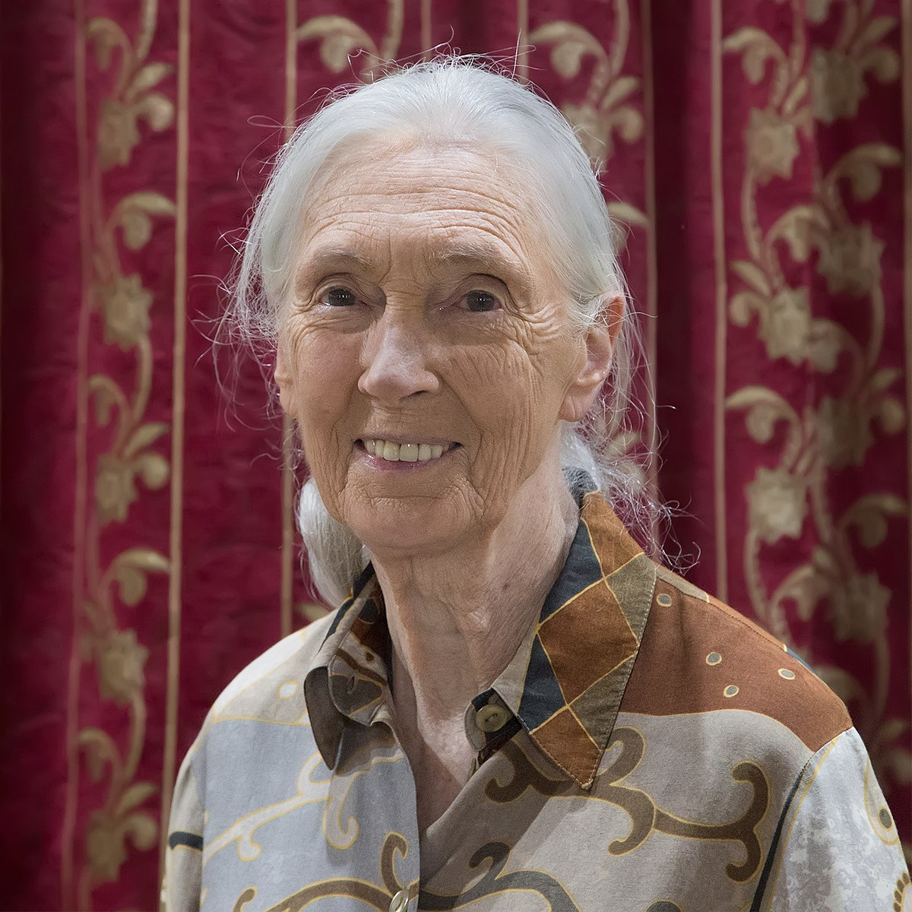
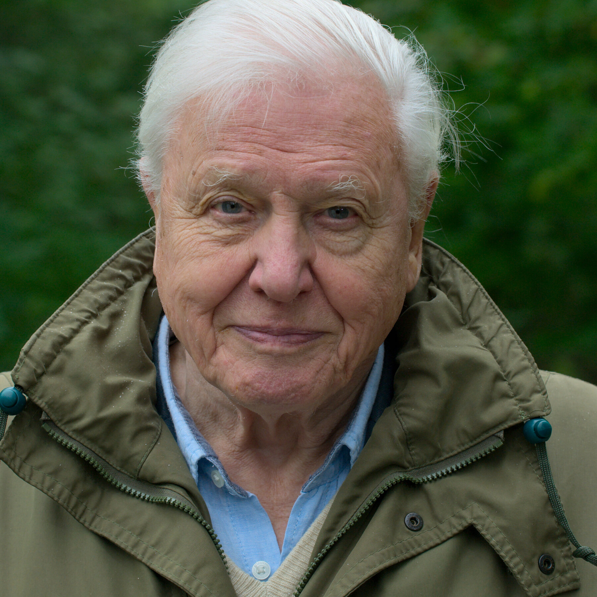

Environmental Issues |
Make a Change |
Notable Environmentalists |
About Us |
|---|
| Greta Thunberg | Jane Goodall | David Attenborough |
|---|---|---|
 |
 |  |
|
Greta Thunberg, born on January 19, 2003, is a 19-year-old environmental youth activist from Sweden. She advocates for the cessation of climate change, which continues to affect our planet until now. She protests against climate change and tells government officials to act on this ever-unsolvable problem. She encourages young people like her to care for the environment and join in her protest.
“You have stolen my dreams and my childhood with your empty words. And yet I’m one of the lucky ones. People are suffering. People are dying. Entire ecosystems are collapsing. We are in the beginning of a mass extinction, and all you can talk about is money and fairy tales of eternal economic growth. How dare you!” -Greta Thunberg |
Valerie Jane Morris-Goodall, or Jane Goodall for short, is a British environmentalist from London that advocates for the conservation of chimpanzees and animals in general. In 1960, she conducted a long-term research in Gombe Stream National Park in Tanzania, studying the behaviors of chimpanzees there. For 30 years, she came up with many findings; for instance, she discovered that chimpanzees are able to make and use tools just like humans and that they are omnivores. She wrote and published numerous books that cover her findings about animals and nature.
"The greatest danger to our future is apathy." -Jane Goodall |
David Frederick Attenborough, or David Attenborough for short, is an English broadcaster and naturalist born on May 8, 1926. He advocates for the appreciation and protection of animals, plants, and their habitats through his award-winning documentaries. He started presenting in 1954 in “Zoo Quest”, a BBC television nature series. After several years, he eventually directed and produced his own documentaries. Aside from advocating the appreciation and protection of species and their habitats, Attenborough also advocates for the cessation of climate change and the protection of our planet in general.
“The final chapter is ours to write. We know what we need to do. What happens next is up to us.” -David Attenborough |